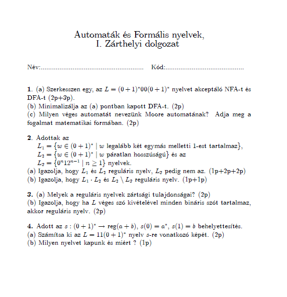

1.-2. A véges determinisztikus automata fogalma, szómonoid. Egy véges determinisztikus automata
által elfogadott nyelv. Véges nondeterminisztikus automaták. Egy véges nondeterminisztikus
automatával ekvivalens véges determinisztikus automata. 3.-4. Kimenettel rendelkező véges automaták. Moore automaták. Nyelvek, nyelvosztályok. Reguláris nyelvek és reguláris kifejezések. Reguláris nyelvek és véges automaták kapcsolata,, Kleene tétele. Reguláris nyelvek zártsági tulajdonságai. 5.-6. Véges determinisztikus automaták minimalizálása, Myhill – Nerode tétele. Véges automaták mint felismerők. Döntési algoritmusok véges automaták esetén. Alkalmazások. Környezetfüggetlen nyelvtanok és nyelvek. Bal és jobboldali derivációk, derivációs fák. 7.-8. Veremautomaták, nondeterminisztikus és determinisztikus veremautomaták. Veremautomaták és környezetfüggetlen nyelvtanok ekvivalenciája. Környezetfüggetlen nyelvtanok ekvivalens átalakításai. Bar-Hillel lemma. A környezetfüggetlen nyelvek zártsági tulajdonságai. A programozási nyelvek szintaktikája. 9.-10. Turing gépek mint felismerők és átalakítók- Rekurzíven felsorolható és rekurzív halmazok. Parciálisan rekurzív függvények. Eldönthetőség és kiszámíthatóság. Turing eredménye. 11. –12. Generatív nyelvtanok, nyelvtanok és nyelvek kapcsolata, környezetfüggő nyelvek. Chomsky hierarchia tétele. Szintaktikai elemzés és szintaktikus elemzők. 13.-14. LR(k) nyelvtanok fogalma. Tár és idő: a bonyolultságelmélet elemei. Polinomiális idejű algoritmusok. Alkalmazások. Javasolt irodalom 1. Fülöp Zoltán, Formális nyelvek és szintaktikus elemzésük – Polygon Kiad. jegyzet 2001-2019. 2. Bach Iván, Formális Nyelvek, Typotex Kiad, Budapest, 2001. 3. J. E. Hopcroft, J. D. Ullman: Introduction to Automata Theory, Languages and Computation, Addision-Wesley, 1979. 4. Demetrovics-Denev_pavlov, A számítástudomány matematikai alapjai, Nemzeti Tankönyvkiad. Budapest, 1999. |
 |